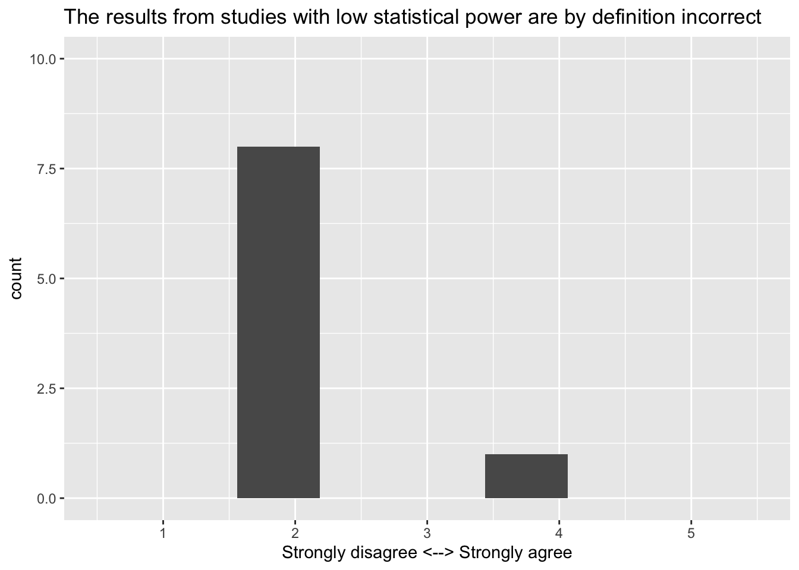
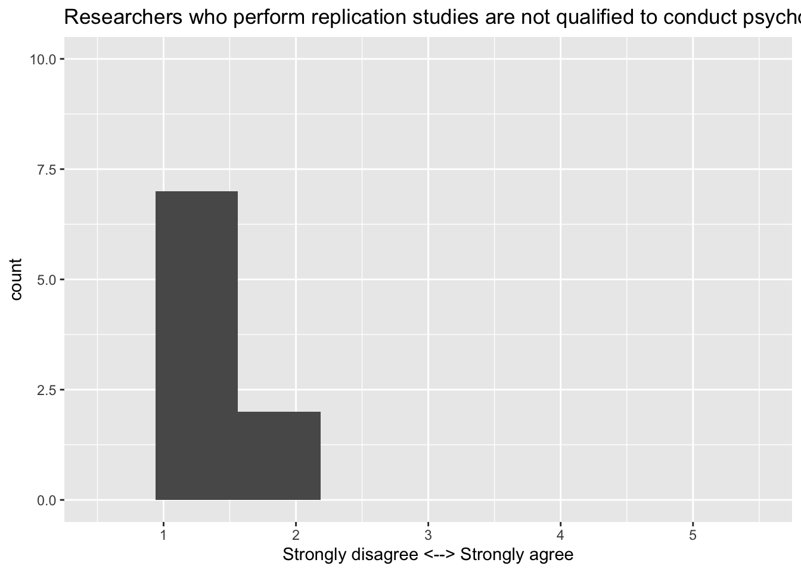
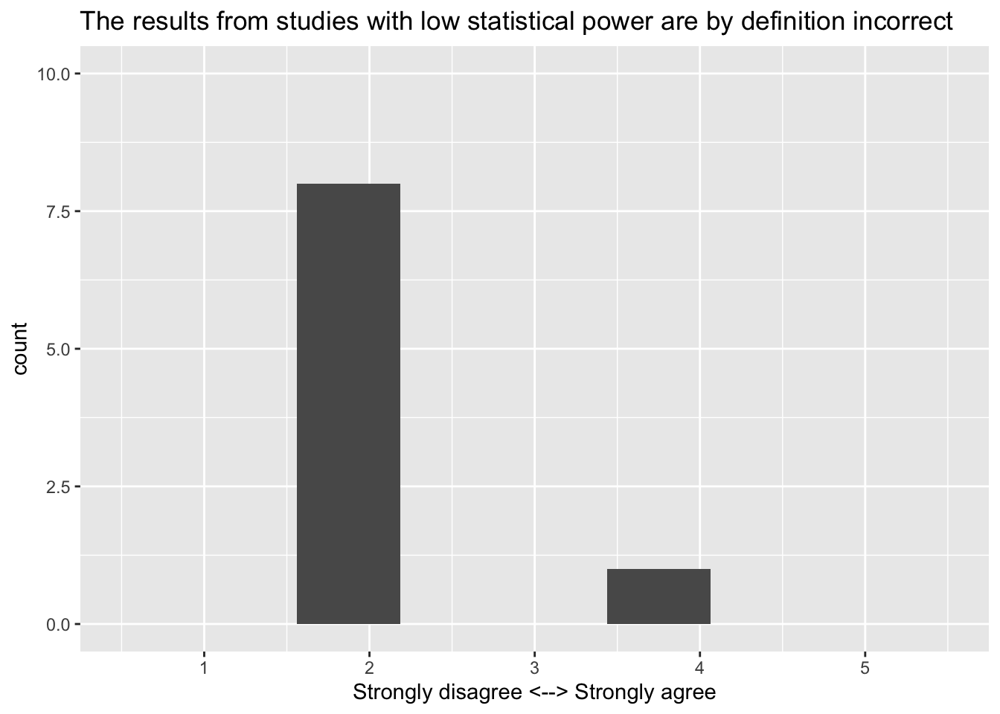
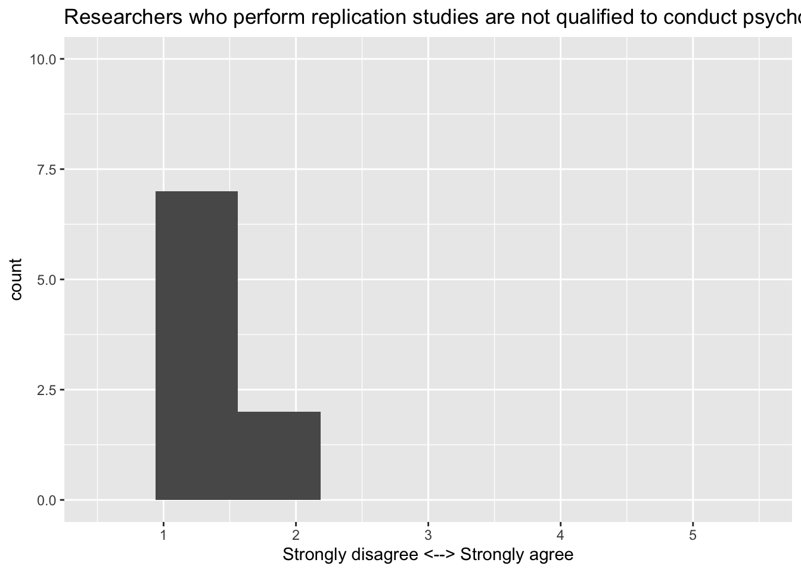
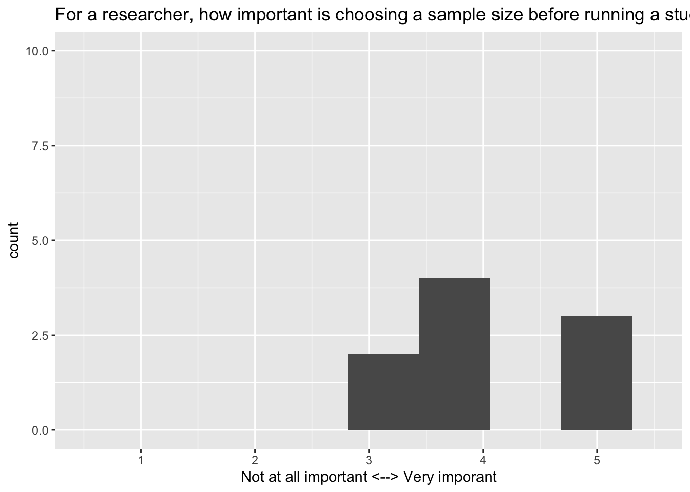
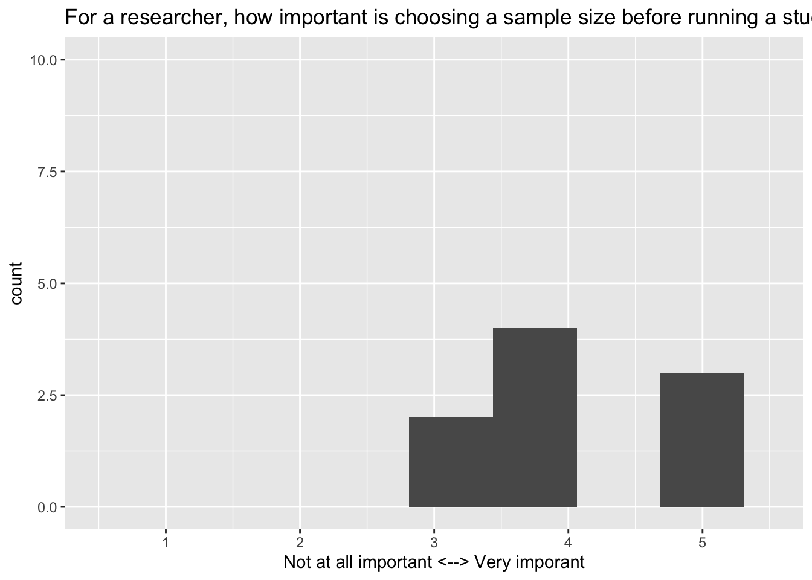
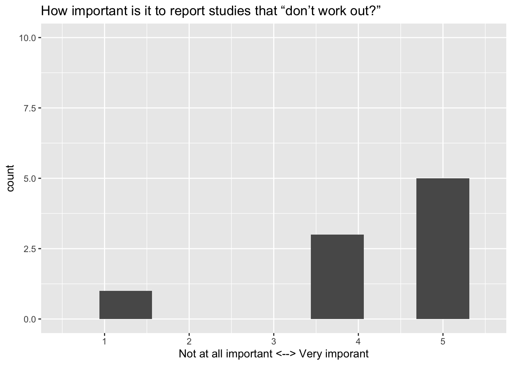
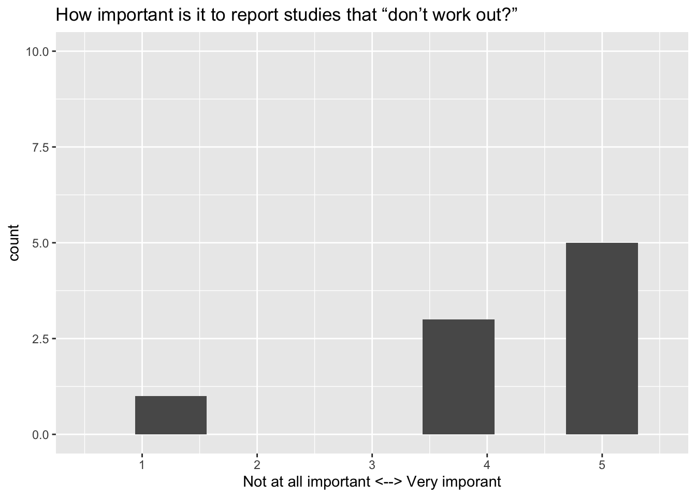

Code
survey_03_qr <- qrcode::qr_code("https://forms.gle/BTqayMKnP7Xnyhst9")
plot(survey_03_qr)
This page documents the data processing steps involved with Survey 03 in PSYCH 490.012. The survey questions were adapted from those discussed in (Chopik, Bremner, Defever, & Keller, 2018).
The page also serves as a learning opportunity for exploring how to generate a set of plots using functional programming techniques.
We show below three ways to link to the survey.
These are all equivalent, but we show them here to illustrate how this can be done.
The long URL that Google Forms provides can be shortened using the Google interface. We use the shortened form to show the clickable link below.
Link: https://forms.gle/BTqayMKnP7Xnyhst9
survey_03_qr <- qrcode::qr_code("https://forms.gle/BTqayMKnP7Xnyhst9")
plot(survey_03_qr)
First, we load the external packages (groups of R commands) that we will be using.
Next, we download the data from the Google Sheet where it is collected. Dr. Gilmore has stored his Google account credentials in a special environment file that can be accessed by the R command Sys.getenv("GMAIL_SURVEY").
if (!dir.exists('csv')) {
message("Creating missing `csv/`.")
dir.create("csv")
}
if (params$update_data) {
options(gargle_oauth_email = Sys.getenv("GMAIL_SURVEY"))
googledrive::drive_auth()
googledrive::drive_download(
"PSYCH 490.012 Fall 2024 Survey 03 (Responses)",
path = "csv/survey-03-crewell-et-al.csv",
type = "csv",
overwrite = TRUE
)
message("Data updated.")
} else {
message("Using stored data.")
}The data file has been saved as a comma-separated value (CSV) format data file in a special directory called csv/.
Because these data might contain sensitive or identifiable information, we only keep a local copy and do not share it publicly via GitHub. This is achieved by adding the name of the data directory to a special .gitignore file.
Next we load the data file and clean it.
survey_03 <-
readr::read_csv("csv/survey-03-crewell-et-al.csv", show_col_types = FALSE)
# Google Forms puts the full question in the top row of the data file.
# We use the names() function to extract and print the original questions.
survey_03_qs <- names(survey_03)
survey_03_qs [1] "Timestamp"
[2] "The field of psychology has problems replicating results"
[3] "Replication of research is only a problem in the field of psychology"
[4] "The incentive structure in psychological research can undermine the broader goals of science"
[5] "The results from studies with low statistical power are by definition incorrect"
[6] "Researchers who perform replication studies are not qualified to conduct psychological research"
[7] "It is important for a researcher to report all measures and experimental conditions that were included in a study"
[8] "For a researcher, how important is choosing a sample size before running a study?"
[9] "How important is it to make data publicly available so that results can be verified by other researchers?"
[10] "How important are decisions in data collection, analysis, and reporting in affecting how likely a researcher will find a significant effect?"
[11] "How important is it to report studies that “don’t work out?”"
[12] "How important is it that results from a psychology study are counterintuitive (e.g., different from what you would expect)?"
[13] "Any comments?" For plotting and analyses, it’s usually easier to shorten the questions by creating a short name that reflects the underlying idea or construct. We’ll use the rename() function from the dplyr package for this.
new_names <-
c(
"timestamp",
"psych_problems_replicating",
"replication_problem_psych_only",
"incentives_undermine",
"low_power_incorrect",
"replicators_unqualified",
"report_all_measures_important",
"decide_n_before_important",
"share_data_important",
"collection_analysis_decisions_affect",
"report_null_findings_important",
"counterintuitive_results_important",
"comments"
)
# Swap out old (long) names for new (short) names
long_names <- names(survey_03)
names(survey_03) <- new_namessurvey_03 <- survey_03 |>
dplyr::filter(!stringr::str_detect(comments, "test"))We’ll pause here to start building a data dictionary, a file that explains the origin, format, and usage of our dataset.
# Make new data frame with long and short names for reference
survey_03_data_dictionary <-
tibble::tibble(q_long = long_names, q_short = new_names)
survey_03_data_dictionary |>
knitr::kable(format = 'html') |>
kableExtra::kable_classic()| q_long | q_short |
|---|---|
| Timestamp | timestamp |
| The field of psychology has problems replicating results | psych_problems_replicating |
| Replication of research is only a problem in the field of psychology | replication_problem_psych_only |
| The incentive structure in psychological research can undermine the broader goals of science | incentives_undermine |
| The results from studies with low statistical power are by definition incorrect | low_power_incorrect |
| Researchers who perform replication studies are not qualified to conduct psychological research | replicators_unqualified |
| It is important for a researcher to report all measures and experimental conditions that were included in a study | report_all_measures_important |
| For a researcher, how important is choosing a sample size before running a study? | decide_n_before_important |
| How important is it to make data publicly available so that results can be verified by other researchers? | share_data_important |
| How important are decisions in data collection, analysis, and reporting in affecting how likely a researcher will find a significant effect? | collection_analysis_decisions_affect |
| How important is it to report studies that “don’t work out?” | report_null_findings_important |
| How important is it that results from a psychology study are counterintuitive (e.g., different from what you would expect)? | counterintuitive_results_important |
| Any comments? | comments |
We’ll add other items to the data dictionary later.
I would like to retrieve the “long” form of the question from the data dictionary so that I can use it in my plots.
# Retrieve the "long" question from the survey_03 data dictionary
retrieve_long_q <- function(this_q_short, data_dict = survey_03_data_dictionary) {
assertthat::is.string(this_q_short)
data_dict |>
filter(q_short == this_q_short) |>
select(q_long) |>
as.character()
}
retrieve_long_q("psych_problems_replicating")[1] "The field of psychology has problems replicating results"Then, I can create my own histogram function that can pull the specific data for a variable from the data frame. And I wrap this in a second function that retrieves the long question name.
my_hist <- function(data, var, q_long = "test") {
data |>
ggplot() +
aes(x = {{var}}) +
geom_histogram() +
xlim(c(.5,5.5)) +
ggtitle(q_long) +
xlab("Rating")
}
my_hist_q <- function(var, data) {
this_q <- retrieve_long_q(var)
my_hist(data, .data[[var]], this_q)
}
my_hist_q(var = "replication_problem_psych_only", data = survey_03)
I’m showing the final products above. Creating and testing these took a little bit of time.
Before we plot the data, let’s remember what the scales look like:
Now, we’re ready to print histograms for all of the data.
my_vars <- names(survey_03)[2:(dim(survey_03)[2]-1)]
purrr::map(my_vars, my_hist_q, survey_03)[[1]]
[[2]]
[[3]]
[[4]]
[[5]]
[[6]]
[[7]]
[[8]]
[[9]]
[[10]]
[[11]]
purrr::map(my_vars, my_hist_q, survey_03)[[1]] [[2]]  [[3]]
[[3]]  [[4]]  [[5]]  [[6]]
[[4]]  [[5]]  [[6]]  [[7]]  [[8]] [[9]]
[[7]]  [[8]] [[9]]  [[10]]  [[11]]
[[10]]  [[11]] 
Some titles are too long to fit over the plots. This should be fixed in a future version.
As one approach, I need a function that splits a long string by inserting a line feed \n character at the break point(s).
Another approach would be to generate Rmarkdown code that includes the long question as a figure caption (fig.cap="My title").
Here, we try plotting the histograms again using principles we learned from metaprogramming.
Define the functions.
my_freq_plot <- function(data = survey_03, var) {
data |>
ggplot() +
aes(.data[[var]]) +
geom_freqpoly(na.rm = TRUE,
show.legend = FALSE,
bins = 30) +
xlim(c(.5, 5.5)) +
xlab("Rating")
}
return_plot <- function(data, var) {
knitr::knit_child(
text = c(
"### Histogram for: `{var}`",
"\n",
"```{r, echo = F}",
"print(my_freq_plot(data, var))",
"```"
),
envir = environment(),
quiet = TRUE
)
}
return_section <- function(data, var) {
chunk_hdr <- knitr::knit_expand(text = c("### Responses for: `{this_var}`", "\n"),
this_var = var)
# Build fig.cap from ground up
fig_name <- paste0("fig-dist-", var)
fig_cap <- paste0("'Distribution of responses to ", var, "'")
fig_caption <- paste0("fig.cap = ", fig_cap)
plot_chunk_hdr <- paste0("```{r ",
fig_name,
", echo = FALSE, warning = FALSE, ",
fig_caption,
"}")
plot_chunk <- c(plot_chunk_hdr, "print(my_freq_plot(data, var))", "```")
question_long <-
paste0("\nQ: '", retrieve_long_q(var), "'")
knitr::knit_child(
text = c(chunk_hdr, plot_chunk, question_long),
envir = environment(),
quiet = TRUE
)
}Run using lapply().
these_vars <- names(survey_03)[2:12]
res <- invisible(lapply(these_vars, return_section, data = survey_03))
cat(unlist(res), sep = "\n")psych_problems_replicatingQ: ‘The field of psychology has problems replicating results’
replication_problem_psych_onlyQ: ‘Replication of research is only a problem in the field of psychology’
incentives_undermineQ: ‘The incentive structure in psychological research can undermine the broader goals of science’
low_power_incorrectQ: ‘The results from studies with low statistical power are by definition incorrect’
replicators_unqualifiedQ: ‘Researchers who perform replication studies are not qualified to conduct psychological research’
report_all_measures_importantQ: ‘It is important for a researcher to report all measures and experimental conditions that were included in a study’
decide_n_before_importantQ: ‘For a researcher, how important is choosing a sample size before running a study?’
collection_analysis_decisions_affectQ: ‘How important are decisions in data collection, analysis, and reporting in affecting how likely a researcher will find a significant effect?’
report_null_findings_importantQ: ‘How important is it to report studies that “don’t work out?”’
counterintuitive_results_importantQ: ‘How important is it that results from a psychology study are counterintuitive (e.g., different from what you would expect)?’
The keys to getting this to work were as follows:
In return_chunk(), generate separate text strings for the header (chunk_hdr), plot chunk (plot_chunk), and long question. See also the sequence for building a suitable string for fig.cap.
Combine these separate pieces within knitr::knit_child() with the text= parameter.
In my_freq_plot(), use the aes(.data[[var]]) syntax to turn the string value for var into an unquoted variable in the dataset.
Bottom line: It’s always better to bite off smaller chunks.
{kind=link}
{kind=link}
{kind=link}
{kind=link}
{kind=link}
{kind=link}
{kind=link}
{kind=link}
{kind=link}
{kind=link}
{kind=link}
{kind=link}
{kind=link}
{kind=link}
{kind=link}
{kind=link}